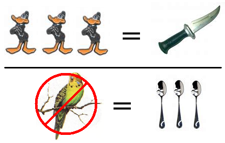

as metnions earlier you have already succedd in step 1!!!! so you probably want to pat youself on the back or eat a sandwich for doing a good deead. but this also does not mean you pass with rainbow colors;;; as you have passed step but do not understand full reasons why. here is example?
you buy doiug beach book. why is succedd chance any better than buying other stupid book like how to lose 20 pounder in 20 days eating only cream cheese and yogurt???
simple answer in analogy form: you can catch three ducks
with one knife but zero parakeets with 3 spoons.
